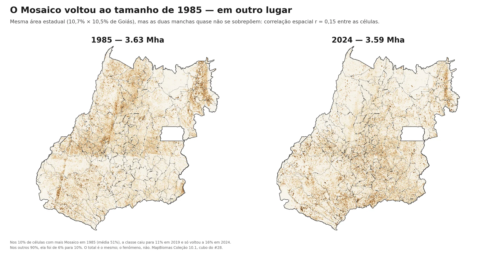
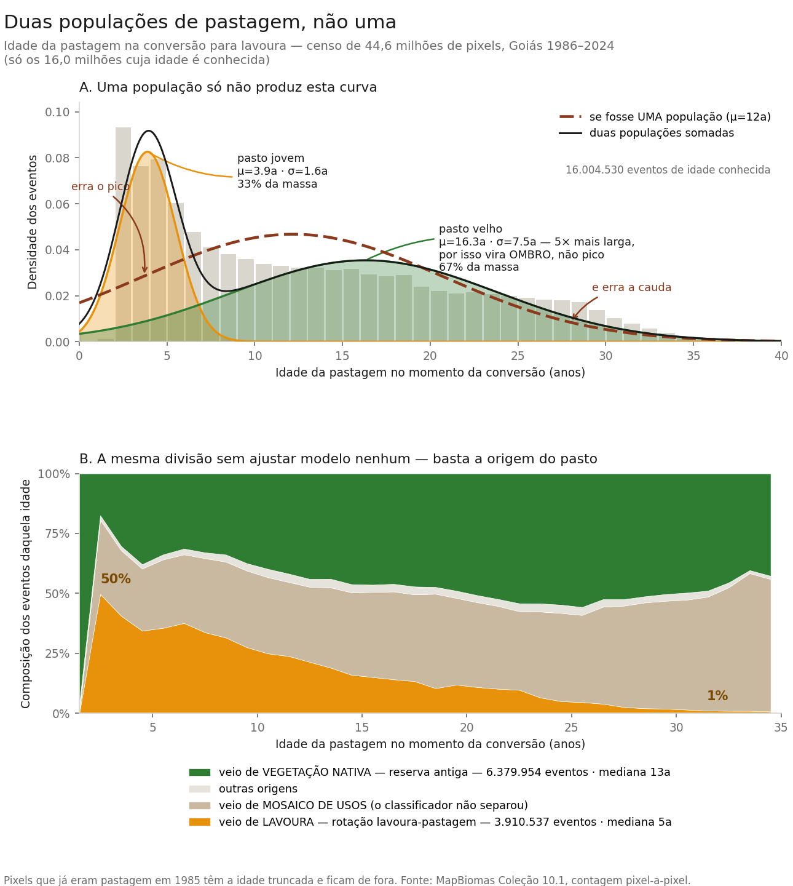

Faixas = atos · pontos = referências · clique para navegar
1985
2024
Dissertação CIAMB-UFG · Goiás · 1985–2024
A marcha ao norte
Em quarenta anos, toda a fronteira agropecuária de Goiás se moveu para o norte —
pasto, boi e lavoura, cerca de 70 km cada. A explicação óbvia — a soja do Sul
empurrando o pasto para longe — não resiste ao teste, e este trabalho
mostra por quê. Cada pixel desta tela é um quadrado de 30 metros no chão: são
378 milhões deles cobrindo Goiás, recontados todo ano
por quatro décadas — 15 bilhões de observações — para rastrear a
cicatriz que os mercados e as leis deixaram no território. A história se conta em
três atos no mapa — e se resolve em quatro perguntas.
Comece pelo mapa de 1985 ↓
Parte 1
Os 40 anos no mapa
O fenômeno bruto, antes de qualquer explicação: quatro décadas de uso da terra,
ano a ano, no mesmo enquadramento.
Como ler os 40 anos
O que vem a seguir é o fenômeno bruto: quatro décadas de uso da
terra, ano a ano, no mesmo enquadramento. Ainda não é a tese — é o que aconteceu
no chão, antes de perguntarmos onde e por quê. A série se
organiza em três atos, definidos por triangulação estatística
(não escolhidos a dedo), marcados pelas faixas coloridas da
régua acima; os pinos pretos são referências institucionais que
contextualizam as inflexões — não são o esqueleto da história.
Os três atos
I · Pastagem como herança · 1985–2000
II · Expansão e intensificação · 2001–2019
III · Conversão acelerada, mascarada · 2020–2024
Como os atos foram definidos?
As fronteiras ~2001 e ~2020 não foram escolhidas — foram
detectadas por triangulação de métodos estatísticos
independentes:
Método
~2001
~2020
sup-F multivariado (primário)
F = 62,2 ✓
F = 21,5 ✓
STARS (sensibilidade)
2004/06 ✓
—
KL/TV de transições
pico 2003 ✓
pico 2019–2022 ✓
Soja plantada (SIDRA, âncora imune)
—
quebra em 2020 ✓
Validação global — Intensity Analysis (Aldwaik &
Pontius): Kruskal-Wallis H = 20,3, p < 0,001 — os
3 Atos diferem significativamente em taxa de mudança. É um
teste único comparando os três períodos ao mesmo tempo, não
detecções separadas por fronteira. A candidata a 4º período (~2005/06)
foi rejeitada: taxa total NS (p = 0,060).
Uma ressalva honesta sobre a fronteira de 2020. Quando a
matriz de transições foi recontada em julho de 2026 — incluindo a classe
"Mosaico de Usos", que antes ficava de fora —, o pico do indicador de
divergência migrou de 2020 para 2022. Os quatro métodos
não apontam mais exatamente o mesmo ano. A fronteira de 2020 se sustenta
porque a âncora que a define não passa por classificador nenhum: a área
de soja plantada que o IBGE recolhe em campo quebra em 2020 sozinha.
Referências institucionais
1994 · Plano Real
1996 · Lei Kandir
2002 · Crédito e demanda chinesa
2003 · Boom de commodities
2012 · Código Florestal
2018 · Reorganização de mercado
Os pinos contextualizam, não identificam: as políticas
testadas são federais, então não existe grupo não-tratado com que
compará-las. Marcam quando algo mudou no país — não a prova de que aquilo
causou o que se vê no mapa.
Como navegar
Role para avançar no tempo — cada parágrafo lateral é um ano.
Clique em uma faixa ou em um pino da régua para saltar.
O mapa e os cards laterais sincronizam com o ano em foco.
O sumário à esquerda salta direto ao veredito ou à oficina.
Veg. naturalPastagemAgriculturaMosaico de usos (só na barra)ÁguaUrbanoOutros
1985
Fonte: MapBiomas Coleção 10.1 · pixel-a-pixel (30 m) · o Mosaico de usos entra na barra, mas fica transparente no mapa
I. Pastagem como herança (1985–2000)
O ponto de partida não é uma paisagem natural — é uma fronteira que já se moveu.
O fim do regime militar e a hiperinflação dos anos 1980 enquadram o início da série. Mas o que o mapa mostra em 1985 é o legado da década anterior: POLOCENTRO e PRODECER abriram cerca de um terço do estado para pecuária extensiva. Sem estabilidade macroeconômica, qualquer cálculo agrícola de longo prazo segue bloqueado.
O dourado que domina o centro-sul é pastagem. O verde escuro do norte e nordeste — Paranã, Vão do Paranã — é o cerrado que sobreviveu. A agricultura aparece em manchas pontuais de rosa no sudoeste; ainda é incipiente.
II. Expansão e intensificação (2001–2019)
A soja abre caminho no sudoeste impulsionada pela estabilização da moeda.
O Plano Real em 1994 faz o que nenhuma política agrícola isolada conseguiria: permite calcular o futuro. Logo depois, em 1996, a Lei Kandir zera o ICMS sobre exportações de grãos. Essa conjunção de estabilidade e isenção atrai o capital privado e inicia a grande transformação.
No mapa, o sudoeste (Rio Verde, Jataí e Mineiros) começa a se vestir de rosa com o avanço da lavoura sobre o pasto. Embora a pecuária continue gigante no total do estado, a dinâmica econômica do agronegócio agora pertence à soja.
III. Conversão acelerada, mascarada (2020–2024)
A lavoura avança sobre o pasto mais rápido do que nunca — e o mapa, sozinho, diz o contrário.
Este é o ato em que a medida engana. Olhando só a classe “agricultura” do satélite, a conversão parece ter parado: no Sul goiano ela cai 88%. Mas a área de soja plantada que o IBGE recolhe em campo — que não passa por classificador nenhum — cresce 38% na mesma janela. O que mudou foi o rótulo: a partir de 2021 a conversão de pasto em lavoura passa a ser classificada como “Mosaico de Usos”, a categoria que o MapBiomas usa quando não consegue separar as duas coisas. Contada pela régua corrigida, a saída de pasto para lavoura-ou-uso-misto acelera cerca de 50%.
O que o pasto perde, a lavoura ganha: o recuo da pastagem triplica de velocidade (de 0,07 para 0,27 Mha por ano). A vegetação nativa, essa sim, não muda de ritmo — segue cedendo o mesmo tanto de sempre, agora concentrada ao norte, onde ainda resta Cerrado. Com 34,9% do estado em vegetação natural em 2024, Goiás não encontrou um piso: mudou o endereço da fronteira.
O que 40 anos deixaram
Depois de 40 anos, quem ganhou e quem perdeu área em Goiás?
Cinco números enquadram a transformação que os três atos descreveram em
detalhe. Vêm do painel agregado da UF (MapBiomas Coleção 10.1 e IBGE/PPM).
−5,8 Mha
Vegetação natural perdida · 1985→2024
17,65 → 11,88 Mha (51,9% → 34,9% do território). A 15 pontos do limite legal de Reserva Legal no Cerrado (20%).
×4,8
Crescimento da agricultura
1,17 → 5,58 Mha. A soja sozinha cresce ×12 em área (0,37 → 4,50 Mha) e ×13 em produção (1,3 → 17,0 Mt).
+1,0 Mha
Pastagem · saldo líquido enganoso
10,98 → 11,99 Mha. Mas a trajetória é em U invertido: cresce até 2003 (pico ~14,8 Mha) e depois recua. O saldo agregado esconde o ciclo.
×1,34
Lotação bovina por hectare
1,45 → 1,94 cab/ha. Rebanho cresce 46% (15,9 → 23,2 M cab) enquanto a área de pasto cresce só 9% — a pecuária se intensifica.
≈ 0
Mosaico de usos · saldo praticamente nulo
3,63 → 3,59 Mha. Mas o caminho não é nulo: cai de 10,7% do estado (1985) a 6,1% (2019) e volta a 10,5% (2024). A classe que absorve a conversão do fim da série é a mesma que estava lá no começo.
Em uma frase
A vegetação perdeu 5,8 Mha, a agricultura quase quintuplicou e duas classes —
pastagem e Mosaico — parecem estáveis no saldo enquanto sobem e descem
no caminho. Saldo líquido é justamente o que esconde o caminho dos hectares.
Para onde os hectares foram
De onde veio a terra que cada classe ganhou — e para onde foi a que ela perdeu?
O saldo acima é líquido: diz quanto cada classe ganhou ou perdeu, mas esconde de
onde vieram e para onde foram esses hectares. O diagrama cruza o
uso de cada pixel em 1985 com o uso do mesmo pixel em 2024. Ele foi desenhado para
contar a marcha — a vegetação que virou pasto, o pasto que virou
lavoura. Uma sétima classe entra esmaecida de propósito: o
Mosaico de Usos, que não conta marcha nenhuma e ganha um painel
só seu logo abaixo.
Carregando diagrama…
Diagrama de Sankey · cruzamento pixel-a-pixel 1985 ↔ 2024 (30 m).
Larguras proporcionais à área em milhões de hectares. Fonte: MapBiomas Coleção 10.1 via GEE.
Três fluxos desenham a marcha:
4,10 Mha
Veg. natural → Pastagem
O maior fluxo da série. Desmatamento histórico para pecuária extensiva — boa parte concentrada nos anos 1980–1990.
2,72 Mha
Pastagem → Agricultura
A maior conversão entre classes manejadas. É o que permite a expansão da lavoura sem desmatar diretamente.
1,29 Mha
Veg. natural → Agricultura (direta)
Desmatamento direto para lavoura. Menor que via pasto, mas existe — e ganha peso no nordeste após 2010.
O nó que não é marcha
O Mosaico de Usos, à parte
No diagrama acima o Mosaico está apagado de propósito. É a classe que o MapBiomas
usa (classe 21) quando não consegue separar lavoura de pasto —
e, isolado, o que ele mostra não é terra mudando de uso, e sim
correntes de ida e volta quase iguais: o rótulo mudando de ideia.
vira Mosaico →MOSAICO→ Mosaico vira
1,62
Pastagem
1,72
1,00
Vegetação
0,46
0,06
Agricultura
0,56
Áreas em milhões de hectares (Mha) · cruzamento pixel-a-pixel 1985 ↔ 2024
A Pastagem quase empata: 1,62 Mha entram no Mosaico e 1,72 Mha
saem dele — terra que vai e volta entre "pasto" e "Mosaico" sem nada mudar no
campo. Por isso, nesta peça, todo número com "agricultura" no destino é reportado
entre duas réguas — o piso (agricultura) e o teto
(agricultura ∪ mosaico) — e ancorado na soja que o IBGE mede em campo.
Matriz de transição 7×7
Em uma frase
Dois fluxos mandam — vegetação→pasto (o desmatamento antigo) e pasto→lavoura (a
conversão recente) —, a pastagem é o elo intermediário de quase tudo, e a classe
ambígua do satélite movimenta tanta área quanto os fluxos que a peça consegue
nomear.
Parte 2
A investigação
O saldo disse o quê mudou e de onde para onde. Falta o
onde no estado — e o por quê.
A pergunta que o mapa não respondeu
Quarenta anos de conversão têm um saldo — vegetação perdida, agricultura
multiplicada, pasto em U invertido. Mas um saldo é mudo sobre a geografia: ele
diz quanto, não onde. E o "onde" guarda a história de verdade.
Há uma explicação óbvia à espera. Ela diz assim: a lavoura, empurrada pela soja,
tomou o pasto no Sul; o pasto, expulso, recuou para o Norte, levando o boi junto.
Seria um vazamento de desmatamento dentro do próprio estado — um
iLUC intra-estadual, a lavoura de um lado empurrando a fronteira
do outro. É uma boa história. É a que mais favorecia a tese inicial deste trabalho.
E ela não sobrevive ao teste. Procurada em trinta e seis recortes
diferentes, a marca que essa história exigiria não apareceu em nenhum. O que a
investigação encontrou no lugar é mais sutil — e melhor documentado. Ela se responde
em quatro perguntas.
Perna 1 de 4
evidência: forte
O padrão existe?
A fronteira agropecuária de Goiás se moveu? E, se moveu, para onde?
Para responder sem depender de impressão visual, medimos o centro de
massa de cada uso da terra — o ponto de equilíbrio geográfico, ponderado
pela área de cada classe — e o acompanhamos ano a ano, sobre as 166 Áreas Mínimas
Comparáveis (território constante, imune às emancipações municipais).
A expectativa era modesta: talvez a agricultura parada e o pasto subindo. O que
apareceu foi mais forte e mais uniforme. Tudo marchou ao norte. A
pastagem avançou +78 km; o rebanho, +67; a agricultura, +65. Só a vegetação natural
ficou onde estava — o deslocamento é pequeno e a barra de erro inclui zero, então a
leitura honesta é "ancorada", não "andou um pouco". E há um padrão
que se repete em todos os 40 anos: a lavoura fica sempre ~120–130 km ao sul
do pasto e do boi. A fronteira não é uma linha só — são camadas que sobem juntas,
mantendo a distância entre si.
O centro de massa em movimento, 1985 → 2024
Cada ponto é o centro de gravidade de um uso da terra no estado — a média
das posições das 166 AMCs, ponderada pela quantidade da variável ali. Aperte
reproduzir (ou arraste a faixa) e veja os quatro centros caminharem
ao norte ao longo de 40 anos. À direita, a mesma marcha lida como latitude,
ano a ano.
1985
Latitude do centro, ano a ano — mais alto = mais ao norte
A latitude do centro de massa de cada variável, ano a ano (mais alto = mais ao norte; faixas = os três atos). A vegetação natural (verde) é um teto estável; pastagem e rebanho marcham para cima; a agricultura sobe em paralelo, ~1,2° ao sul — o gradiente persistente. Fonte: painel AMC (#32).
+78 km
Pastagem · deslocamento ao norte (40 anos)
O maior avanço da série. Rebanho +67 km acompanha — e o rebanho é medido pelo IBGE em campo, não por satélite.
+65 km
Agricultura · e uma medida independente confirma
Mesma régua do pasto e do rebanho, então os três números se comparam entre si. A soja plantada do IBGE — medida em campo, imune ao classificador — anda +48 km na mesma direção, com intervalo de confiança excluindo zero. Não é o mesmo objeto (a soja é o componente dominante da lavoura, não a lavoura toda), mas é a confirmação por fora do satélite.
~120–130 km
Lavoura ao sul de pasto/rebanho — em todos os anos
Não é só "tudo subiu": existe um gradiente latitudinal persistente — a marca de dois Goiáses. O tamanho exato do vão depende da régua: em 2024 ele é de 135 km pelo satélite, 111 km pela régua corrigida e 122 km pela soja do IBGE. Grande e persistente em qualquer uma das três; é isso que a afirmação carrega.
ancorada
Vegetação natural
+8 km, e o intervalo de confiança inclui zero. Dizer "andou um pouco" seria ler ruído como sinal.
Uma ressalva que acabou reforçando o achado
Há um detalhe incômodo nessa peça, e ele merece ser dito antes que alguém o
descubra. O centroide da agricultura é calculado pesando cada região pela área que
o satélite rotula como "agricultura" — e, a partir de 2021, o MapBiomas passa a
rotular boa parte da conversão recente como "Mosaico de Usos". Ou seja:
exatamente a lavoura nova, a que está na fronteira, deixa de entrar na conta. Se
você olhar a linha pontilhada da agricultura no gráfico acima, ela achata depois de
2019. A leitura tentadora seria "a agricultura parou de subir". Ela está errada.
Dá para testar isso porque nem toda medida do painel passa pelo classificador. O
rebanho e a soja plantada vêm de pesquisa de campo
do IBGE. Se a marcha depois de 2019 fosse ilusão, elas ficariam paradas junto. Não
é o que acontece:
Deslocamento ao norte entre 2019 e 2024, por medida
◆ = medida em campo pelo IBGE, imune ao classificador de imagens.
Quatro medidas dizem que tudo andou ao norte nesses cinco anos — três delas ~10 a 13 km, a quarta 4,4 km. A
quinta diz que nada andou — e é justamente a única cujo rótulo mudou no
período.
E há uma última peça que fecha o argumento. Quando se localiza no mapa a área que
mudou de rótulo, ela não está espalhada: o centro dessa massa "escondida" fica
46 km ao norte do centro da agricultura visível, e o seu
crescimento por região acompanha o da soja do IBGE quase ponto a ponto
(correlação de 0,84; 1,52 contra 1,53 milhão de hectares). A conversão que o
satélite deixou de nomear está acontecendo na fronteira.
Vale ser exato sobre o que isso significa, porque é fácil confundir com a hipótese
que a terceira pergunta vai derrubar. Dizer que a lavoura nova está no
norte não é dizer que a lavoura do Sul empurrou alguém para o norte.
É quase o contrário: a lavoura está subindo junto, não empurrando
de trás. Uma coisa é a fronteira agrícola se deslocar; outra, bem diferente, é uma
região deslocar a outra. A primeira este trabalho mede aqui. A segunda ele testou —
e não encontrou.
O erro de medida, portanto, aponta contra a tese, não a favor
dela: a régua crua faz a marcha parecer mais fraca do que ela foi. Corrigi-la
reforça o achado em vez de ameaçá-lo.
Então por que não usar sempre a régua corrigida? · o limite da união
Porque ela só é interpretável na janela em que a mudança de rótulo acontece.
Somar "agricultura ∪ mosaico" ao longo dos 40 anos devolve
−60 km — a agricultura andando para o sul. O número é
real e está nos dados, mas não significa o que parece.
A razão: em 1985 a classe "Mosaico" já existia e era enorme — 3,63 Mha,
10,7% do estado —, e ficava bem ao norte. Ela não era soja escondida;
era terra de uso misto indiferenciado, outra coisa. Ao longo da série ela
encolhe (até 6,1% em 2019) enquanto a lavoura de verdade cresce no sul. Somar as
duas em 1985 e em 2024 é comparar dois objetos diferentes, e o resultado mede
principalmente o Mosaico antigo se dissolvendo — não a lavoura recuando.

O que observar. O Mosaico ocupa praticamente a mesma área nas duas pontas — 3,63 Mha em 1985, 3,59 em 2024 —, mas as duas manchas quase não se sobrepõem (correlação espacial entre as células r = 0,15): a de 1985 se dissolveu; a de 2024 surgiu em outro lugar. É por isso que somar "agricultura ∪ mosaico" ao longo dos 40 anos mede sobretudo esse remanejamento, não a lavoura — e por isso, no mapa dos 40 anos, o Mosaico entra só na barra de composição e não é pintado no mapa. Fonte: MapBiomas Coleção 10.1, cubo pixel-a-pixel do #28.
Por isso a régua da união entra aqui como teto de uma janela curta
(2019–2024, onde a migração de rótulo de fato ocorre), nunca como régua de
série longa. É a mesma disciplina que a peça usa em todo lugar onde a medida
fica ambígua: reportar o intervalo e conferir com uma fonte de fora — e dizer
qual pergunta cada régua consegue responder.
A robustez, em uma linha cada
Não é artefato de recorte (MAUP). Refizemos o cálculo pixel a
pixel, sem nenhuma malha administrativa: a marcha reaparece a 1–2 km do valor
original (pasto +79,2 contra +78 km; agricultura +66,9 contra +65). (#43)
A "muralha norte" é a floresta, não a vegetação inteira. Ao abrir
o agregado em formações, o que resiste é a floresta; o campo nativo recuou +35 km.
Foi uma autocorreção: o número médio escondia o oposto acontecendo por dentro.
(#44)
Toda a marcha vem com barra de erro. Bootstrap de AMCs
(B=2.000): é daí que sai o veredito "ancorada" para a vegetação. (D19)
E não é deriva genérica — dois controles separam a fronteira do resto.
A área urbana não acompanha: ela anda 8 km para o sul
(IC95% [−19; −1,5]), no sentido oposto ao da fronteira. E o leite — pecuária
da bacia consolidada do Sul — sobe menos da metade do que sobe o rebanho total
(+30 km contra +67 km). O efeito é que o boi se afasta do leite:
o vão entre os dois centros mais que dobra, de 30 km em 1985 para 68 km em 2024.
Quem marcha é a pecuária de corte na fronteira, não "o mapa inteiro subindo".
(#44)
Uma quinta camada, e ela vai à frente de todas: o fogo
As quatro camadas medidas acima sobem mantendo a distância entre si. Há uma quinta,
e ela vai adiante: o centro de massa do fogo em vegetação fica ao
norte do centro da conversão em 39 dos 39 anos da série, com uma
dianteira média de +73 km — e nunca troca de lado.
É uma vanguarda geográfica, e só isso. A leitura tentadora seria
"o fogo abre o caminho": ela foi testada e não se sustenta no tempo — a
liderança temporal some sob transformação logarítmica, inverte quando se tiram os
anos de seca de 1985 e 2010, e o teste de precedência agregado dá nulo. O fogo
co-evolui com a conversão sob um distúrbio comum; ele marca onde a
fronteira está, não quando ela vai andar. (#41 · a mesma disciplina da
D16 que a Perna 3 aplica ao Granger)
Resposta
Toda a fronteira agropecuária marchou ~65–78 km ao norte em 40 anos — pasto à
frente, lavoura ~120 km atrás, vegetação natural ancorada.
Perna 2 de 4
evidência: moderada
Qual é o mecanismo?
Se a fronteira inteira marchou, que conversão — e em que parte do estado — a moveu?
A marcha é o saldo de duas conversões diferentes, e elas não estão no mesmo lugar.
No Sul, a transição que manda é pasto → lavoura: intensificação,
terra que troca de função. No Norte, é mata → pasto: fronteira,
terra nova sendo aberta. Dois Goiáses. A medida que sustenta essa divisão é
justamente a que não depende da classe ambígua do satélite — o
veg→pasto, que despenca −49% no Sul entre os Atos II e
III e cede só −13% no Norte.
Isso responde onde, e responde bem. Mas não responde como. Saber
que o Sul converte pasto em lavoura não diz se aquele pasto era uma etapa planejada
de um sistema agrícola ou um pedaço de fazenda parado há vinte anos que enfim virou
soja. São duas economias diferentes com o mesmo nome no mapa. É essa distinção que
esta perna persegue — e ela obriga a mudar de medida.
A medida que revela a intenção: a idade do pasto
Um pasto de três anos que vira lavoura foi, quase certamente, plantado já pensando
nisso: capim como etapa de um ciclo, não como pecuária. Um pasto de vinte e cinco
anos que vira lavoura é outra história — é terra que ficou parada e que alguma
oportunidade nova tornou lucrativa. A idade da pastagem no instante da
conversão é a coisa mais próxima da intenção do produtor que um satélite
consegue ver.
Não amostramos: contamos, pixel a pixel, todas as 44,6 milhões de
conversões de pasto para lavoura em Goiás — 3,8 Mha, 11,2% do estado. Dessas,
16,0 milhões têm idade conhecida; as outras já eram pastagem em
1985, quando a série começa, e por isso têm a idade truncada — não se sabe se
aquele capim tinha cinco anos ou quarenta.

O que observar. À esquerda, a curva cinza é o dado bruto — e ela não tem dois picos visíveis: tem um pico jovem e um ombro longo. A linha tracejada mostra o que uma única população de pastagem produziria: ela erra o pico e erra a cauda. A razão de o segundo grupo não formar um segundo pico está nos desvios — o pasto jovem é concentrado (σ≈1,6 ano), o velho é espalhado por décadas (σ≈7,5 anos), e uma população larga vira platô, não espiga. À direita, a mesma divisão sem ajustar modelo nenhum: entre o pasto convertido aos 3 anos, metade veio de lavoura; entre o convertido aos 33, quase nada veio. Fonte: MapBiomas Coleção 10.1, contagem pixel-a-pixel.
São, então, duas populações de pastagem sendo convertidas em
paralelo, e vale nomeá-las com cuidado, porque o nome já é meia interpretação. A
jovem é pasto de ciclo curto — capim que dura poucos anos entre
duas lavouras, e que o painel da direita mostra ter vindo de lavoura. É o
que a agronomia chama de rotação lavoura-pastagem. Ela é
compatível com integração lavoura-pecuária,
mas não a prova: o satélite vê o capim, não vê se havia boi nele. A velha é
reserva ativada — pastagem consolidada, aberta no Cerrado uma ou
duas décadas antes, que alguma mudança de preço, crédito ou logística tornou
compensadora converter agora.
Antes de seguir, uma objeção precisa ser eliminada — e ela tem duas versões. Essa
curva soma quarenta anos de conversões em todo o
estado. Talvez não haja duas populações convivendo em lugar nenhum:
talvez haja regiões diferentes somadas, ou épocas diferentes somadas, e a
aparência de dois grupos seja só o efeito de empilhar coisas distintas. É a mesma
desconfiança nos dois eixos, e ela merece o mesmo teste: isolar cada
pedaço e olhar de novo.
Primeiro eixo: um mecanismo em cada metade do estado?
Se o Sul intensifica e o Norte abre fronteira, a suposição quase automática é que
cada metade do estado tenha ficado com uma das duas populações: pasto de ciclo curto
no Sul capitalizado, reserva ativada no Norte de ocupação recente. É elegante, encaixa
com tudo o mais, e esta investigação chegou a afirmá-la. Testá-la
é simples: se ela vale, ao isolar cada região a curva deve mudar de forma — perder
um dos dois grupos ou quase.
Clique numa região do mapa para ver a distribuição só dela — e,
no fim, troque a régua de medida.
As duas populações convivem dentro de cada célula do mapa
Cada célula é uma AMC
e está pintada pelo veredito, não pela idade: as duas populações
aparecem ali dentro? O contorno grosso são as 5 mesorregiões, e é nele que
se clica.
Goiás inteiro
O que conta como conversão:
A primeira régua é a imune: ela não depende de o satélite
conseguir separar lavoura de uso misto, então nenhuma conversão some da conta
quando o classificador muda de ideia. A segunda é a estrita —
mais limpa de definição, e por isso mesmo exposta.
Nesta régua, Norte e Noroeste ganham um vale visível que Sul,
Centro e Leste não têm. É real — e é o artefato: veja o que acontece ao voltar
para a régua imune.
Percorra as cinco regiões e o desenho é praticamente o mesmo. Não há uma metade
de pasto novo e outra de pasto velho: há o mesmo par de populações operando lado a
lado no estado inteiro. As 5 mesorregiões são bimodais, e
todas as 166 AMCs também o são por dentro — na régua imune,
que é a do mapa; na estrita, onde 2 AMCs ficam sem conversão suficiente, são 162 de
164, e as duas exceções falham pelo mesmo lado (peso do grupo jovem baixo demais para
o teste contar, não ausência de dois grupos). Um mapa sem
variação nenhuma é a forma visual do número que fecha a questão: a mesorregião
explica 0,5% da variação da idade.
A régua que muda a resposta — e por que a resposta certa é uma só
Vale insistir num detalhe, porque ele quase enganou esta investigação de novo. Se
você trocar a régua na peça acima para só pasto → lavoura, o desenho
passa a mudar, e muito: Norte e Noroeste ganham um vale nítido no
meio da distribuição, enquanto Sul e Leste seguem com pico e ombro — e o Centro fica
no meio do caminho, com um vale raso. Não é ilusão de ótica — medido, o vale do
Noroeste tem profundidade de 42%, o do Norte 27%, o do Centro
apenas 8%, e o do Sul e o do Leste simplesmente não existem. Pela distância entre as
formas, as cinco regiões se separam em dois blocos: o trio do sul de um lado (o
Centro entre eles), a dupla do norte do outro.
E é tudo artefato. A régua estrita só enxerga a conversão que o satélite rotulou
como agricultura — e o rótulo que ela perde, o uso misto, não se
perde por igual no estado: some mais ao norte. O que sobra ao norte é uma amostra
enviesada para a ponta velha, e é ela que cava o vale. Fechado o buraco, a
diferença some: a distância entre a forma do Sul e a do Norte cai de
0,22 para 0,02 — um décimo —, e o vale do Noroeste, de 42% para
6%.
A hipótese elegante caiu, e caiu duas vezes: primeiro na idade média, agora na
forma da distribuição. Quanto menos a região explica, mais robusto fica o
achado de que as duas populações são universais no estado — e não uma peculiaridade
de meia dúzia de municípios.
Como se soube que o gradiente regional era falso · a autocorreção
A afirmação derrubada era: "o Sul converte pasto jovem (mediana 9 anos), o Norte
converte pasto velho (16 anos)". O defeito não estava na conta, estava no que
entra nela. A idade só é medida quando o destino do pixel recebe o rótulo
agricultura — e, no fim da série, boa parte da conversão passa a ser
rotulada Mosaico de Usos pelo satélite. Esses eventos somem da
amostra sem avisar, e não somem por igual em todo lugar: somem mais ao norte.
O "gradiente" era, em boa parte, essa seleção.
A verificação foi refazer tudo com a pergunta grossa — pasto → (agricultura
∪ mosaico) —, que é imune à mudança de rótulo por construção porque não
depende de o classificador separar as duas classes. Sob essa régua a amplitude
Sul→Norte cai de 7 anos para 2, a ordem das regiões se
embaralha, e a parcela de variação atribuível à mesorregião despenca de 3,7%
para 0,5%. Três caminhos independentes chegaram ao mesmo
lugar. O que não mudou sob a régua nova foi a coexistência: continuou
em 5 de 5 regiões, e passou de 9 para 10 das 10 células região×período.
É por isso que a peça acima pinta o veredito e não a idade. Um mapa colorido por
idade média seria bonito, contaria uma história limpa — e estaria mostrando um
artefato do classificador.
Segundo eixo: e se forem apenas épocas diferentes?
Sobra a outra metade da objeção, e ela é mais séria do que parece. Se Goiás
converteu pasto novo nos anos 1990 e pasto velho nos anos 2020, então somar as
quatro décadas fabrica duas populações que nunca coexistiram — seriam dois
regimes em sequência, não dois mecanismos em paralelo. Mudaria a tese inteira desta
perna.
Não é o caso. Isolando cada período, as duas populações continuam
lá dentro: no Ato II sozinho — 32,5 milhões de conversões, o maior bloco da série —
e no Ato III sozinho, nas cinco mesorregiões de cada um. São
10 de 10 células período×região. Não é empilhamento de épocas.
E há um detalhe que vale mais que o resultado. O Ato I é unimodal em toda
parte — e não poderia ser outra coisa. Uma conversão em 1995
acontece sobre um pasto que tem, no máximo, dez anos, porque a série começa em
1985; para enxergar um pasto de vinte e dois anos sendo convertido é
preciso chegar a 2007. No primeiro período, a população velha é
invisível, não ausente. Ler aquele "um grupo só" como retrato do
território — e não da janela de observação — seria inventar uma história de
transformação que os dados não contam. É por isso que a contagem acima começa no
Ato II.
As duas populações dentro de cada período, célula a célula
Contagem de mesorregiões em que as duas populações aparecem dentro do
período, nas duas réguas de medida:
Período
só pasto → lavoura
pasto → lavoura ou uso misto
Ato I · 1985–2000
fora do teste — a população velha ainda não é observável
Ato II · 2001–2019
4 de 5
5 de 5
Ato III · 2020–2024
5 de 5
5 de 5
A única falha fica no Noroeste durante o Ato II, e é pelo mesmo critério das
exceções do mapa: o grupo jovem existe, mas pesa pouco demais para o teste
contar. Na régua imune ela desaparece.
Uma tentação a evitar: o vale entre as duas populações é bem
mais fundo no Ato III que no Ato II. Isso não é o pasto velho
ganhando espaço — é o mesmo efeito de janela, agora ao contrário. Quanto mais
tarde o período, mais idade cabe dentro dele, e mais separados os dois grupos
aparecem. O eixo do tempo continua suspenso.
Se não é a região nem a época, o que decide a idade do pasto?
Os dois eixos óbvios estão descartados: as duas populações não são regiões somadas
nem épocas somadas — elas convivem, de fato, dentro de cada recorte. Restavam duas
famílias de explicação, e cada uma faz uma previsão diferente e verificável.
A primeira é estrutural: a idade seria decidida pelo tipo de
sistema produtivo instalado. Aqui é preciso ser honesto sobre o instrumento. O
Censo Agropecuário não tem variável de integração
lavoura-pecuária; o mais próximo disponível é o plantio direto —
semear sem revolver o solo, mantendo a palhada da safra anterior. Isso é uma
prática de conservação de solo, não uma prática de integração com
pecuária: os dois costumam andar juntos na lavoura tecnificada do Cerrado, mas
plantio direto não implica boi na área nem rotação com pastagem. O que ele indexa
bem é lavoura de grãos moderna e capitalizada — o ambiente onde o pasto de
ciclo curto faria sentido. Com essa ressalva, a previsão é testável:
municípios com mais plantio direto deveriam converter pastagens mais novas.
É uma previsão que pode falhar, e é por isso que ela foi testada.
A segunda é de fluxo: a idade seria decidida não pela estrutura
instalada, mas pelo choque do momento — crédito rural chegando, valor da produção
subindo. Aí o pasto velho seria ativado por oportunidade, e a conversão seguiria o
dinheiro, não o sistema.
não estabelecido
Estrutura · plantio direto
Na correlação simples a previsão se confirma: mais plantio direto, pasto mais
novo. Só que o plantio direto também se concentra no Sul — como quase tudo em
Goiás. Segurando o gradiente espacial, a associação encolhe cerca de um terço e
fica na fronteira da significância, sem cruzá-la; e não sobrevive à
correção para testes múltiplos. Vale nas duas réguas de medida. Ou seja:
o dado não decide. Não é o mesmo que dizer que não há efeito —
ver abaixo.
real, e ao contrário
Fluxo · crédito rural
É a única associação que resiste ao controle espacial, à correção para testes
múltiplos e à troca de régua — na régua imune ela até se fortalece
(r +0,22 → +0,30). Não é artefato de rotulagem. Mas aponta para o
lado contrário do esperado: onde o crédito cresceu mais, o
pasto convertido é mais velho. Isso combina com reserva sendo ativada
por dinheiro novo, e não com "crédito financia rotação". Duas ressalvas
grandes: ela só existe quando os anos recentes entram — no
recorte até 2019 é praticamente zero — e o mecanismo não foi investigado.
Por que "não estabelecido" e não "refutado" · um nulo que teve de ser retirado
Esta investigação já publicou, sobre o plantio direto, uma afirmação mais forte
do que a de agora: que não havia efeito próprio — um nulo limpo. Ela
foi retirada, e o motivo é instrutivo.
Aquele nulo tinha sido obtido quando a idade de cada município era estimada a
partir de umas poucas dezenas de pixels sorteados. Ruído na variável que se
quer explicar puxa qualquer correlação em direção a zero — então um nulo medido
sobre um desfecho ruidoso é indistinguível de falta de poder.
Ao refazer o mesmo teste, nos mesmos municípios, com a idade medida pelo censo
de pixels em vez da amostra, a associação que era nula passou a cruzar o limiar
usual. Não foi mais dado que mudou a conclusão: foi menos erro de medida.
Com o conjunto completo de municípios, a estimativa volta a ficar no fio da
navalha. Daí o veredito atual, que é o honesto: indeterminado.
Um nulo limpo encerraria a pergunta; um indeterminado não encerra — e a
diferença entre os dois é justamente o tipo de coisa que uma banca deve poder
cobrar.
A regra que saiu daqui vale para o trabalho inteiro e está registrada como
D14: em Goiás, quase toda variável de interesse desce
para o sudoeste junto com a aptidão agrícola, então nenhum cruzamento
transversal pode ser lido antes de segurar o gradiente espacial — e os dois
lados de uma comparação precisam receber o mesmo controle, sob pena de
o veredito medir o desenho do teste em vez do território.
Nenhuma das duas famílias explica a idade do pasto. A estrutura não decide;
o crédito deixa uma marca real, mas pequena, recente e apontando para o lado
oposto do que a hipótese pedia — e ainda sem mecanismo. A escolha entre girar o
capim em três anos ou deixá-lo trinta não se lê na região, não se lê no sistema
produtivo do município e mal se lê no dinheiro que chegou até ele. Ela acontece
abaixo da escala que estes dados alcançam — no talhão, na fazenda,
na história daquela propriedade. É um limite honesto de resolução, e aponta para
onde uma próxima investigação teria de olhar: dados por imóvel rural, não agregados
municipais.
Resposta
O mecanismo são duas populações de pastagem convertidas em paralelo —
pasto de ciclo curto, em três a cinco anos, e reserva antiga ativada quinze, vinte,
trinta anos depois. A geografia separa qual transição domina cada metade do
estado, mas não separa essas duas populações: elas convivem em
praticamente toda célula do território, e o que decide entre uma e outra está abaixo
do alcance destes dados.
Perna 3 de 4 · o clímax
forte no negativo · corroborante no positivo
É a lavoura do Sul empurrando o Norte?
O pasto que o Sul perdeu é o pasto que o Norte ganhou?
As duas pernas anteriores entregaram dois fatos que, postos lado a lado, quase
escrevem sozinhos a conclusão. A fronteira inteira subiu ao norte. E ela subiu
fazendo coisas opostas em cada metade do estado: no Sul, a lavoura tomando
o lugar do pasto; no Norte, o pasto tomando o lugar da mata.
Some os dois e a história se monta sozinha: o pasto expulso do Sul foi reaparecer no
Norte, em cima do Cerrado. Seria um iLUC intra-estadual — um
vazamento de desmatamento dentro do próprio estado, com a soja do Sudoeste na origem
e a mata do Norte na conta. É a hipótese que mais favorecia este trabalho.
Ela tem um problema de lógica antes de ter um problema de dados. Uma coincidência no
espaço não é um mecanismo. Dois processos independentes — a lavoura
avançando no Sul, o pasto avançando no Norte — movidos pela mesma força
externa desenham exatamente o mesmo mapa que um empurrão desenharia. Para
separar as duas leituras é preciso sair do mapa e procurar uma
assinatura que só o empurrão produz.
O que precisaria aparecer — e onde procurar
São duas assinaturas, e as duas são específicas o bastante para poder falhar. É isso
que faz delas um teste, e não uma ilustração.
No tempo. Se a lavoura do Sul empurra, ela tem de se mover
primeiro. A expansão no Sul precisa anteceder o avanço do
pasto no Norte — não apenas acompanhá-lo.
No espaço. Um empurrão tem direção. Se a lavoura dos meus vizinhos
ao sul cresce e isso expulsa pasto para cima, o meu pasto tem de
crescer. No teste isso vira um número — chame-o de
θ — e a hipótese do empurrão exige que ele seja positivo.
Os vizinhos ao norte entram como placebo: por eles não deveria passar efeito
nenhum.
Se, em vez de um empurrão, o que existe é co-evolução sob uma força comum, a previsão
é outra e igualmente checável: nenhuma precedência, nenhum θ positivo — e um efeito
local forte, onde a lavoura entra e o pasto sai ali mesmo, sem
viajar para lugar nenhum.
A assinatura que não aparece
O teste espacial foi rodado doze vezes — nas três réguas de medida
(a estrita, a imune ao rótulo, e a soja que o IBGE mede em campo), nas duas janelas
de tempo e nos dois desfechos, pasto e rebanho. A hipótese precisa de um único θ
positivo em algum lugar. Não há nenhum.
As doze especificações do teste espacial · a hipótese exige efeito positivo
Cada ponto é uma especificação: duas janelas de tempo × dois desfechos (pasto e
rebanho), em cada uma das três réguas. ◆ = medida em campo pelo IBGE,
imune ao classificador. As doze são negativas — os vizinhos ao sul
co-expandem com o Norte em vez de empurrá-lo. Note ainda que as maiores
magnitudes estão na régua exposta e encolhem para perto de zero nas duas réguas
limpas: o pouco que havia de sinal dependia do rótulo. Fonte: #34, auditoria D26.
Vale ser exato sobre a força desse argumento, porque ele não é do tipo que se resume
num p-valor. Não é um número que refuta a hipótese — é a ausência de um.
A hipótese fez uma previsão arriscada, foi procurada em doze recortes diferentes, e a
marca que ela exige não apareceu em nenhum. O que apareceu foi o sinal contrário, e o
contrário é exatamente o que a co-evolução prevê.
0 de 12
A assinatura espacial · θ nunca é positivo
Nem uma vez, em nenhuma régua, em nenhuma janela, em nenhum dos dois desfechos.
O sinal é o achado robusto. A significância não é: só
uma das doze células cruza p<0,05, e é justamente a régua que a mudança de
rótulo contamina — por isso este trabalho não cita mais aquele p=0,02 como se
carregasse a conclusão.
0 de 24
A precedência temporal · o Sul nunca vem antes
Vinte e quatro combinações de régua, janela, desfecho e defasagem; o menor p é
0,078. Mas um nulo vale o poder que tem: com 38 diferenças
anuais, uma simulação do próprio teste dá ~48% de chance de
detectar um efeito moderado — e ~93% para um grande. Ou seja: este nulo
descarta um empurrão forte, e apenas não encontra um moderado.
Sozinho, ele não fecharia a questão.
−0,52 → −1,14
O efeito local · o que existe de fato
Onde a lavoura entra, o pasto sai ali mesmo — e este é o efeito mais
firme de toda a perna: p<0,001 em cinco das seis células do
mesmo desenho (a exceção é a soja do IBGE na janela curta, onde sobram poucos
anos). Ele ainda dobra
quando se corrige a medida (−0,52 na régua crua, −1,14 na imune), o que faz
sentido: com o uso misto dentro da conta, a substituição local aparece mais
completa. É intensificação — não expulsão à distância.
O contraste é o argumento inteiro. O mecanismo local aparece em quase toda
célula do mesmo desenho, com o maior coeficiente da perna. O mecanismo
à distância não aparece em nenhuma. A lavoura substitui o pasto onde ela
está; ela não o manda para 300 km ao norte.
A ponta solta que quase inverteu a tese
Falta contar a parte mais desconfortável — e é a de que este trabalho mais se orgulha.
O teste temporal, rodado ao contrário, dava um resultado forte:
o Norte anteciparia o Sul (p=0,0007). Se fosse real, não salvaria a
hipótese do empurrão — inverteria a tese inteira de cabeça para baixo. Seria fácil
varrer para baixo do tapete com um "o N é pequeno". Em vez disso, fomos atrás. E era
regressão espúria.
A · o resultado que invertia a tese
Rodado ao contrário, o teste dava significativo — o Norte "anteciparia" o Sul.
B · a prova de que é espúrio
Qualquer série lisa "prevê" qualquer outra — o Norte "antecede" até o pasto do
próprio Sul, o que nenhum mecanismo econômico explicaria. Com o método correto
para séries integradas (Toda-Yamamoto), a precedência some nas duas direções.
Por que uma correlação forte pode não significar nada: quando duas séries são
muito "lisas" — sobem devagar e sem sobressaltos —, uma sempre parece prever a
outra, mesmo sem relação alguma entre elas. É um defeito do teste, não um achado
sobre o campo. (#42 → D16)Como se prova que uma precedência é espúria · o método
O diagnóstico veio em três passos, e nenhum deles é "o N é pequeno".
1. A régua estava errada para o material. O teste original
comparava uma série já estabilizada (a lavoura do Sul) com uma que
continua instável mesmo depois de convertida em variações ano a ano (o
pasto do Norte). Comparar as duas é uma conta desbalanceada — a montagem clássica
que fabrica precedência onde não há.
2. O método correto apaga tudo. Existe um teste desenhado
justamente para séries assim (Toda-Yamamoto). Sob ele, a precedência some
nas duas direções: p=0,45 no sentido Norte→Sul e p=0,25 no
Sul→Norte. É importante dizer os dois: isso também retira qualquer
autorização para afirmar que o Sul lidera. O veredito é sem líder,
não "o outro lado ganhou".
3. Os placebos acendem onde não há mecanismo. É a evidência mais
limpa. O pasto do Norte "antecede" o pasto do próprio Sul com exatamente
o mesmo p do achado-manchete (0,0007) — e nenhuma economia explicaria isso. Uma
precedência que aparece em qualquer par de séries lisas não é um mecanismo; é um
defeito do instrumento.
Disso saiu uma regra que passou a valer para o trabalho inteiro
(D16): nenhum resultado de "quem vem antes" em série
agregada é lido como causal antes de passar por diagnóstico de estabilidade,
método robusto e bateria de placebos. Ela foi aplicada retroativamente a outros
pipelines. (#42)
Se ninguém empurra, quem dá o compasso?
Sobra uma pergunta legítima: se os dois mecanismos não se comandam, por que marcham
juntos? A resposta é um impulso macro comum — câmbio, crédito e preço
agindo sobre um gradiente de aptidão que já estava no chão antes de qualquer um deles.
O candidato mais forte é o câmbio real.
Por que o câmbio conta como sinal de demanda por terra. Goiás produz
para exportação — soja e carne cotadas em dólar. Quando o real se desvaloriza (o índice
de câmbio real sobe), a mesma tonelada rende mais reais ao produtor sem
que o preço internacional mude: a rentabilidade de plantar e de criar sobe, e com ela a
demanda derivada por terra — a terra é o insumo dessa produção. É por
isso que uma variável macro (o câmbio) funciona como termômetro da procura por terra em
Goiás: quando o real cai, converter Cerrado em lavoura ou pasto passa a compensar mais. A
literatura registra o elo direto — a desvalorização do fim dos anos 1990 elevou o retorno
esperado da soja e respondeu com cerca de +20% de área plantada (Richards,
2012). Não é "demanda" no sentido do consumidor final; é o canal de rentabilidade
que move a procura do produtor por terra.
Antes do impulso, porém, é preciso mostrar o chão. "Gradiente de aptidão" era,
até 2026, uma premissa herdada — o Sul é apto, o Norte é fronteira —, e ela vinha sendo
provada de forma circular: pelo próprio uso da terra que se queria explicar. Agora é
medida, com um dado físico que não sabe nada de LULC: o mapa de
aptidão agrícola das terras da Embrapa (1:500.000), 8.284 polígonos recortados em Goiás
e agregados às 166 AMCs. Ele reproduz a ordenação sozinho —
Sul 4,69 > Centro 4,47 > Norte 4,17 numa escala em que 6 é a
melhor aptidão —, e a correlação com a latitude é −0,44
(−0,40 por Spearman, imune a tratar uma escala ordinal como se fosse numérica; as três
regiões diferem com p = 0,0002). A premissa deixou de ser assumida.
(#52)
E aqui a honestidade pesa outra vez. Sob a inferência correta para esse tipo de
desenho — um choque único por ano para o estado inteiro —, o achado é
corroborante, não estabelecido. O que o sustenta é a
especificidade: cada teste que deveria dar nulo dá nulo, e o sinal não
depende de nenhum ano em particular. Não é a significância estatística; o p honesto fica
em ≈0,07–0,13, e por isso o câmbio aparece nesta página como o melhor candidato, nunca
como causa provada.
A bateria de especificidade, teste a teste · o que sustenta o câmbio
O achado testado é: sob depreciação do câmbio, o rebanho cresce mais onde a
aptidão é de fronteira. Um resultado assim pode ser real ou pode ser uma deriva
qualquer que a regressão capturou. O que separa os dois casos não é o p do achado —
é o comportamento dos testes que, se o achado for real, têm de sair
vazios.
Teste
Se o achado for real…
Resultado
O achado · câmbio × aptidão → rebanho
efeito, na direção prevista
β = −0,033 na direção prevista, mas p de permutação 0,07–0,13 — não cruza 5%
Placebo de desfecho · → área urbana
nulo
p = 0,34 ✓
Placebo de desfecho · → água
nulo
p = 0,33 ✓
Placebo no tempo · câmbio de t+1
nulo — o futuro não explica o presente
p = 0,105 ✓ (o menos folgado dos quatro)
Placebo no tempo · câmbio de t+2
nulo
p = 0,77 ✓
Jackknife · refazer tirando cada ano
sinal estável
sinal constante em 38 de 38 anos ✓
Uma precisão sobre os p desta tabela, porque misturar réguas de p
seria o mesmo erro que a D20 corrigiu. O p do achado é o de
permutação — o conservador, obtido embaralhando o próprio choque
entre os anos. Os p dos placebos são os clusterizados, que a D20
mostrou serem otimistas. Isso corta a favor da leitura: sob a régua conservadora os
placebos ficariam ainda mais nulos do que aparecem aqui. O que não se pode
fazer é comparar 0,105 com 0,07–0,13 como se fossem a mesma medida — não são.
E uma ressalva que o pipeline registra: o placebo no tempo sai limpo na
especificação exógena (a da aptidão física). Na especificação
antiga, com o proxy de área, o mesmo lead fica limítrofe
(p = 0,062). É uma das razões de a versão exógena ser a que a página
reporta. (#54 → D20 · exposição do #52)
O teste de simetria: silo, banco e lavoura chegam depois
Falta um teste, e ele fecha a perna por um ângulo diferente dos anteriores — sem série
temporal e sem regressão. A lógica é direta: se alguma infraestrutura estivesse
puxando a fronteira, seu centro de gravidade estaria à frente
dela, ao norte. Basta medir onde cada camada está.
Onde está o centro de gravidade de cada camada, em relação à fronteira
A barra rosa é contexto, não infraestrutura: é o núcleo de lavoura, o mesmo vão de
~120–130 km que a Perna 1 mediu. O que importa é que as
duas camadas de infraestrutura estão atrás da fronteira — e a armazenagem,
a mais atrás de todas, senta praticamente em cima do núcleo de
lavoura (a 16 km dele), no cinturão de grãos do Sudoeste. Fontes: #50 (crédito),
#53 (armazenagem), #32 (áreas).
Nenhuma camada aparece na frente. O centroide do crédito fica ~70 km
ao sul da pastagem, e o vão nunca se fecha na janela em que ele é medido (77 km em
2013, 69 km em 2024). O da capacidade de armazenagem é o mais
meridional já medido neste trabalho — ~150 km ao sul do pasto, e ~83 km ao sul até do
próprio crédito. A cadeia exportadora, medida à parte, co-move sem
liderar. Silo, banco e porto consolidam o núcleo: chegam onde a
produção já está. Nenhum deles é a ponta da marcha.
O que este teste descarta · e o que ele não alcança
É a parte que mais importa numa conclusão negativa, porque é onde ela pode ser
cobrada. O que foi testado tem endereço preciso: um canal de deslocamento
intra-estadual, entre vizinhos imediatos (as oito
células mais próximas, filtradas por estarem ao sul), no mesmo ano,
mais precedência temporal de um a dois anos entre os agregados regionais.
Fica descartado, com margem confortável: que a lavoura do Sul
tenha empurrado o pasto para os seus vizinhos ao norte de forma local e visível na
série; e que exista um empurrão temporal forte (o poder do teste é ~93%
para um efeito grande — se ele existisse nesse tamanho, teríamos visto).
Não fica descartado, e é honesto dizê-lo: um deslocamento de
longo alcance, que pule os vizinhos e reapareça a centenas de quilômetros;
um de defasagem muito longa, além dos lags testados; um efeito temporal
moderado, que o poder de 48% não alcança; e qualquer canal que atravesse a
divisa do estado — soja de Goiás deslocando pecuária para o Pará ou para o
Maranhão é outra pergunta, que estes dados não fazem.
A força do que fica de pé não vem de um p-valor — vem da
especificidade. A hipótese fez uma previsão arriscada; foi
procurada em doze recortes espaciais e vinte e quatro temporais, com placebos
direcionais e três réguas de medida independentes, incluindo uma que o satélite não
produz; e a marca que ela exige nunca apareceu, enquanto a marca da explicação
rival apareceu em todos. É esse conjunto que sustenta a conclusão, e é assim que
ele deve ser apresentado. (#34, auditoria D26 · #42 · #50/#53)
RespostaNão. A assinatura que um empurrão do Sul sobre o Norte exigiria não
aparece em nenhum dos doze recortes espaciais nem dos vinte e quatro temporais — e o
que aparece no lugar é substituição local, forte em todos eles. Os dois
mecanismos não se comandam: são coordenados por um impulso macro comum sobre um
gradiente de aptidão.
Perna 4 de 4 · o teto
forte no diagnóstico
Por que a marcha desacelerou?
No Ato III (2020–24) o Sul quase para de abrir terra nova. Acabou a demanda?
A perna anterior terminou sem um comandante: nem o Sul manda no Norte, nem o Norte no
Sul — os dois respondem à mesma força de mercado, cada um sobre o terreno que
tem. Só que uma força de mercado, sozinha, não sabe parar. Enquanto o preço subir, ela
empurra. E no Ato III alguma coisa parou de andar.
A explicação intuitiva é que o mercado esfriou. Ela está errada, e é o erro que torna
esta última perna interessante: no Ato III a demanda estava no pico.
O que faltou não foi comprador. Foi terra.
Primeiro: o que exatamente parou — e onde
Duas precisões antes de qualquer conta, e as duas mudam a pergunta.
Não foi "a lavoura" que freou. Essa leitura seria exatamente o
artefato de rótulo que a Perna 1 desarmou — a lavoura
parece parar no fim da série porque o satélite passa a chamar de "Mosaico de
Usos" o que antes chamava de agricultura. O que freou é a
abertura de vegetação nativa, medida pelo veg→pasto:
uma transição cuja origem e cujo destino ficam fora da classe ambígua, e que
por isso a mudança de rótulo não toca. Ela cai −49% no Sul e
apenas −13% no Norte.
E não foi o estado que desacelerou — foi o Sul. No agregado de
Goiás o fluxo de conversão de Cerrado passou de 0,071 Mha/ano no Ato
II para 0,072 no Ato III: praticamente o mesmo número. O que mudou foi
o endereço. Caiu 37% no Sul, subiu no Centro e no Norte. A marcha não perdeu
velocidade; ela mudou de lugar. É por isso que a pergunta desta perna
não é "por que a fronteira parou" — ela não parou —, e sim
o que a expulsou do Sul.
A demanda não caiu: ela estava no pico
Os três sinais de demanda que o trabalho acompanha desde a Perna
3 subiram todos no Ato III, e não pouco: o câmbio real vai de 134,5 a
169,0 (quanto maior o índice, mais desvalorizado o real — e mais
compensa exportar), o preço recebido pela soja de 104,4 a 186,4,
e o crédito rural de Goiás de 14,3 para 24,1 bilhões de reais. A soja
efetivamente plantada, que o IBGE mede em campo e o satélite não classifica, cresce
38% na mesma janela.
Mas o teste que fecha a questão não é o do estado — é o do próprio Sul, onde a
freada aconteceu. Se o Sul tivesse perdido apetite por terra, ele teria parado de
converter qualquer terra. Não foi o que houve: no Sul do Ato III a conversão
de pasto em lavoura-ou-uso-misto sobe 51% e a soja plantada
sobe 244%, ao mesmo tempo em que a abertura de Cerrado novo cai pela
metade. O Sul não parou de querer terra. Parou de tirar terra do
Cerrado e passou a tirá-la de pasto que já estava aberto.
Aqui cabe a pergunta que essa diferenciação sempre provoca — e ela tem duas metades. A
primeira: sim, esse contraste regional é a própria marcha — a fronteira
que sai do Sul e reaparece no Centro e no Norte é exatamente o que "marcha ao norte"
quer dizer. A segunda é mais delicada, porque o padrão parece iLUC (o
vazamento, a atividade de uma região empurrando a conversão de outra): se o Sul troca
Cerrado por pasto já aberto, o gado que saiu desse pasto teria de ir para algum lugar, e
o Norte, que acelera, seria o destino. Essa hipótese é legítima, e por isso foi
testada — em 36 recortes, a assinatura de deslocamento que ela
exige (uma região antecedendo a outra no tempo) não apareceu em nenhum. O que os
dados sustentam é uma reorganização coordenada sob o mesmo impulso de
mercado (Perna 3) e o mesmo teto de oferta, não um empurrão
causal de uma região sobre a outra. Importante: isso não refuta o iLUC — nega
apenas o canal testado, a precedência temporal; a substituição pode existir sem essa
assinatura. O veredito retoma o ponto.
0,071 → 0,072
Conversão de Cerrado em Goiás · Mha/ano, Ato II → Ato III
No estado, a fronteira não desacelerou — trocou de endereço. Caiu 37% no Sul e subiu no Centro e no Norte.
+51% × −49%
No Sul do Ato III: pasto convertido · Cerrado aberto
A procura por terra no Sul subiu (soja plantada +244%); o que secou foi a fonte. Não é falta de demanda — é troca de origem da terra.
94–97%
Do Cerrado convertível que resta está desprotegido
6,35 de 6,56 Mha fora de Proteção Integral pela malha de unidades de conservação (97%); 94,3% na conferência pixel a pixel. A PI cobre menos de 3% e congelou depois de 2000.
+93% × +14%
Área cultivada · Norte contra Sul (2013–2021)
O Norte quase dobra a área, ganha desenvolvimento no mesmo ritmo do Sul e termina com o vão intacto (IFDM 2023, Norte−Sul = −0,083, IC95% [−0,108; −0,058]).
O que a decomposição mostra — e o que ela não mostra
Dá para separar aritmeticamente a mudança do fluxo em duas parcelas: quanto dela vem
de haver menos Cerrado para converter, e quanto vem de se converter a
uma taxa diferente o Cerrado que ainda há. Esta figura é a peça mais
importante da perna, e ela precisa ser lida com cuidado — porque a leitura
descuidada dela diz o contrário do que a evidência sustenta.
Por que o fluxo de conversão mudou · Ato II → Ato III, por região
O que se lê direto: a barra verde é negativa nas três
regiões — em toda parte há menos Cerrado do que havia, inclusive onde a
conversão acelerou. O que separa as regiões é a barra cinza: a taxa desabou no Sul e
subiu no Centro e no Norte. O que não se pode ler: a barra cinza não
é "demanda". Ela é o resíduo — tudo o que não é o tamanho do estoque:
propensão a converter, atrito de acesso, proteção, e a troca de fonte de terra
descrita acima. O pipeline a chama de efeito-residual exatamente por isso.
Fonte: #39.
Essa figura impõe uma honestidade que vale declarar em voz alta, porque ela é a parte
difícil desta perna: só 17% da freada do Sul é, mecanicamente, "ter menos
Cerrado". Os outros 83% são a taxa de conversão caindo. Se o argumento de
oferta dependesse do tamanho da barra verde, ele seria fraco.
Ele não depende. O argumento se monta por eliminação e por regularidade:
(i) a taxa do Sul caiu enquanto a demanda estava no pico — então
o que a derrubou não é falta de comprador; (ii) não é a lei: o pouco
que resta está quase todo fora de proteção (adiante); (iii) a própria
demanda de terra do Sul continuou existindo, e foi atendida por pasto já aberto, não
por Cerrado; e (iv) entre as 166 unidades, a taxa de conversão
não cai sistematicamente com a depleção (p=0,48) — ou seja, ela é
aproximadamente constante, e quando a taxa é constante o fluxo passa a ser
ditado pelo tamanho do estoque. É esse resultado, e não a barra verde,
que põe a fronteira onde ainda há Cerrado.
O estoque, na mesma escala: o Sul chegou ao fundo primeiro
Comparar os estoques em milhões de hectares esconde o que interessa, porque o Sul
sempre foi a menor das três regiões. Postos na mesma régua — cada região como
percentual do que ela tinha em 1985 — as trajetórias se separam.
Cerrado convertível restante · cada região como % do seu próprio estoque de 1985
O Sul desce mais rápido e mais cedo — é o único dos três que chega a cruzar os
60%, em meados dos anos 2000 — e estabiliza a partir de 2019:
perde 2 pontos em cinco anos,
contra 3,5 do Centro e 3,4 do Norte, que continuam descendo juntos. Não é que o Sul tenha
passado a preservar: é que sobrou pouco para converter. Em hectares, restam
6,56 Mha convertíveis em Goiás (~60% do que havia em 1985), e o
Norte concentra 44% deles. "Convertível" aqui é formação savânica +
campo nativo — as duas classes efetivamente convertidas (D13); ver o detalhe
abaixo. Fonte: #39.
O que "convertível" quer dizer — e por que é um teto, não uma medida
Não existe, para Goiás, um cadastro público que diga hectare a hectare qual terra
pode legalmente virar lavoura. "Convertível" é, portanto, uma
aproximação declarada (decisão D13), construída em três definições
testadas lado a lado; a usada aqui é a refinada:
formação savânica + campo nativo.
A escolha não é arbitrária — é o que a própria depleção mostra. Entre 1985 e
2024 a formação savânica perdeu 38,2% da sua área e o campo nativo
42,5%, enquanto a floresta nativa (mata de galeria, APP) perdeu
22,8%. Savana e campo são as classes que a fronteira de fato come;
a floresta fica fora da conta de oferta — e volta, adiante, na conta de
carbono, onde ela domina.
O limite: como não há CAR, unidade de conservação e PRODES integrados pixel a
pixel, esse estoque inclui Reserva Legal e APP que na prática não podem ser
convertidas. Ele é um teto — a terra realmente disponível é
menor que 6,56 Mha, nunca maior. Um cenário de sensibilidade que desconta 20% de
Reserva Legal foi rodado e não muda o ordenamento entre regiões.
O teto é físico, não institucional
Uma fronteira pode parar por duas razões muito diferentes: porque a terra acabou, ou
porque a lei a barrou. As duas produzem o mesmo gráfico e pedem políticas opostas, e é
por isso que vale separá-las.
Em Goiás não é a lei — mas o que isso quer dizer precisa ser exato, porque a
palavra engana. "Desprotegido", aqui, tem um sentido estreito:
fora de Unidade de Conservação de Proteção Integral, a única categoria que
veda a conversão. Não quer dizer "livre para desmatar": Reserva
Legal e APP, que o Código Florestal impõe dentro de cada propriedade, continuam
valendo e protegem parte desse mesmo estoque (é por isso que os 6,56 Mha são um
teto, não a terra realmente disponível — a de verdade é menor). A conta
mede outra coisa: se o instrumento de política que poderia deter a fronteira de
propósito — a rede pública de unidades de proteção integral — está no caminho
dela. Não está.
O estado protege formalmente cerca de 6% do território, mas quase tudo em
Uso Sustentável (APAs, que admitem uso rural); a
Proteção Integral cobre menos de 3% em qualquer região.
Cruzada com o estoque, ela deixa 6,35 dos 6,56 Mha convertíveis fora de proteção
integral: 97% pela malha de unidades de conservação, e 94,3%
quando a mesma conta é refeita pixel a pixel, que é a régua mais exigente. E ela
congelou: 89% da Proteção Integral de Goiás já existia em 2000, enquanto
a marcha ao norte se intensificava. O teto que o Sul encontrou é o fim do seu estoque
acessível — e o Norte, que guarda 44% do que resta, não tem pela frente nenhuma
área protegida que barre a conversão.
O que essa marcha custou
Duas contas, e nenhuma delas é econômica no sentido usual.
A primeira é de carbono. Precificada por diferença de estoque, a
conversão comprometeu da ordem de 973 Mt de CO2e (751 a
1.208 conforme o cenário de densidade). Duas coisas surpreendem nessa conta. A primeira
é quem paga: a floresta nativa perde 2,6× menos área
que a savânica e ainda assim emite mais (499 contra 458 Mt), porque é cerca de três
vezes mais densa — o custo de carbono não é proporcional à área. A segunda é
quando se pagou: 80% do total (774 Mt) saiu no Ato I, entre
1985 e 2000, e saiu no Sul, a 20,5 Mt/ano. Depois de 2001 o ritmo cai cerca de seis
vezes e inverte a geografia — no Ato III o Sul é o menor emissor (1,4 Mt/ano) e
o Centro o maior (4,6). O centroide da emissão marcha 98 km ao norte,
atrás da fronteira. O grosso do dano ambiental desta história já estava feito antes de
a marcha começar a ser notada.
A segunda é humana, e precisa de cuidado para não virar outra coisa.
Entre 2013 e 2021 a fronteira norte quase dobrou a área cultivada
(+93%, contra +14% no Sul). O desenvolvimento municipal subiu em toda
parte no período — medido pelo IFDM, o Índice FIRJAN de
Desenvolvimento Municipal (emprego&renda, educação e saúde numa escala de 0 a 1), que
em Goiás foi de 0,49 a 0,63 —, mas subiu
no Norte na mesma medida que no Sul, e o Norte terminou onde começou em
relação a ele: abaixo, com o vão intacto. Quase dobrar a área não comprou
desenvolvimento extra nem aproximou a fronteira do núcleo. Entre todas as
variáveis de crescimento testadas, a expansão de área é a mais
desacoplada do desenvolvimento — mais até que o valor que ela
gera, que ao menos mostra um dividendo pequeno.
Como se separa "acabou a terra" de "acabou a demanda"
A conta tem duas peças. O estoque é quanto Cerrado convertível
resta numa unidade. O hazard é a fração desse estoque que é
convertida por ano — a "taxa". O fluxo anual é o produto dos dois:
fluxo = estoque × taxa. Quando o fluxo muda entre dois atos, a
mudança se separa exatamente em duas parcelas — a de ter menos estoque, e a
de converter a uma taxa diferente. É a figura acima.
A separação é aritmética, não causal: ela diz quanto de cada parcela,
nunca por quê. Quem dá o "por quê" são três testes independentes, e os
três apontam para oferta. Um: a taxa não cai com a depleção nas
166 unidades (p=0,48) — não há um atrito geral que trave a conversão quando o
estoque rareia, logo a taxa é aproximadamente constante e o fluxo acompanha o
estoque. Dois: não há saturação — o termo quadrático do
estoque é nulo (p=0,92). Três: o efeito do estoque sobre o fluxo
sobrevive a controlar câmbio, preço e crédito, isto é, a oferta acrescenta poder
explicativo além da demanda.
A ressalva que o próprio pipeline registra: os dois primeiros modelos são
parcialmente mecânicos (o fluxo é estoque × taxa
por definição), então o coeficiente grande do estoque não deve impressionar
sozinho. O teste informativo é o do hazard — e é ele que
está reportado aqui. (#39, blocos B e C.)
RespostaNão acabou a demanda — ela estava no pico. O que o Sul perdeu
foi a fonte: seu Cerrado convertível é o menor e o mais gasto do estado (53%
do que havia em 1985, praticamente parado desde 2019), e a procura por terra que
continuou lá passou a ser atendida por pasto já aberto. A marcha ao norte é, em parte,
a fronteira seguindo o estoque que só resta no norte — e o teto que ela encontra
é físico, não institucional.
Quatro perguntas, quatro respostas — e a hipótese óbvia derrubada pelo caminho. O que
sobra não é a história simples do "Sul empurra o Norte", mas uma mais precisa: uma
reorganização espacial coordenada, sob forças de mercado comuns e um teto de
oferta. O que vem a seguir fecha com essa tese em uma frase — e com a coisa
mais rara do trabalho, o que dá razão para confiar nela: uma investigação que foi
atrás dos próprios erros antes que a banca fosse.
Parte 3
O veredito
A tese em uma frase — e a razão para confiar nela.
A afirmação central
Goiás viveu uma reorganização espacial da produção agropecuária
entre 1985 e 2024 — intensificação no Sul, fronteira no Norte —, coordenada por
forças de mercado comuns (câmbio, crédito, preço) sobre um
gradiente estrutural de aptidão, e limitada por um teto de
oferta de Cerrado convertível que só resta no norte.
Não foi um deslocamento causal de uma região sobre a outra: a
hipótese óbvia do vazamento intra-estadual (iLUC) foi testada em trinta e seis
recortes, e a assinatura que ela exige não apareceu em nenhum. É uma
descrição empiricamente verificável, não uma metáfora — e o que ela afirma é o nulo do
canal testado, não a inexistência do fenômeno
(ver os limites).
Por que confiar nisto: o trabalho foi atrás dos próprios erros
A parte mais rara desta investigação não são os achados — são as vezes em que ela se
corrigiu, sozinha e datada, antes que qualquer banca o fizesse. Cada linha abaixo é
um "eu achava X; o dado disse Y".
A matriz de transição do trabalho estava certa?Não — ela excluía a classe "Mosaico" e
descartava, todo ano, entre 6,5% e 10,9% do estado. Pior: a rotina que a validava
removia a mesma classe dos dois lados antes de comparar — passaria
intacta mesmo se toda a conversão recente tivesse escapado por ali. Recontada, o
fechamento sai de 7,26% para 0,08%.
#12 → #12B
O Sul converte pasto jovem e o Norte, pasto velho?Não — o gradiente de idade é artefato do rótulo;
a região explica 0,5%. Caiu por três caminhos independentes.
#28C, #40, #33 → D25/D26
A lógica do pasto jovem era do plantio direto?Não — era confundidor de latitude.
#40 → D14
O Norte antecede o Sul — o dado que invertia a tese?Não — regressão espúria; some com o método certo.
#42 → D16
O fogo lidera a fronteira no tempo?Não — só na geografia; co-evolui, não antecede.
#41
A "muralha norte" é a vegetação inteira?Não — é só a floresta; o campo nativo recuou.
#44
Calcário e assistência técnica explicam a geografia?Não — somem sob o gradiente 2D, como o plantio
direto. #40B
A infraestrutura de exportação lidera a fronteira?Não — e o regressor "volume" era produção
disfarçada; o achado caiu 9×. #45
O drive comum é estatisticamente significante?Não como se reportava — sob a inferência correta
para o desenho, o p vai de ~0,03 para ≈0,07–0,13. O
trabalho rebaixou o próprio achado. #54 → D20
Faltava barra de erro na marcha?Sim — agora todo ΔNorte
vem com IC95%, e a vegetação inclui zero. D19
E três verificações que não derrubaram nada — e ficam registradas do mesmo jeito
Nem toda auditoria acha um erro; contar só as que acham é outra forma de selecionar
resultado.
A área queimada estava 30% abaixo do painel oficial. Era erro nosso?
Não — três das quatro hipóteses foram testadas e caíram; o número voltou a ser
citável. #14B
O efeito de intensificação era só composição entre municípios?
Não — sob efeito fixo de grupo × ano o coeficiente não se move, e 24 de 24
subamostras mantêm o sinal. #22B
A base de perda de vegetação bate com o sistema oficial?
Bate — r=0,91 contra o PRODES/INPE no regime anual. #48
Em uma frase
Uma tese que perseguiu a hipótese que mais a favorecia e a derrubou é mais forte do
que uma que só coleciona confirmações.
O que o trabalho não afirma
Não se afirma que o iLUC não existe — apenas que o canal
intra-estadual testado não se confirma.
O drive comum é corroborante, não estabelecido: o câmbio é
o candidato mais forte, não uma causa provada — e o p correto para o desenho é
≈0,07–0,13, não 0,03.
No fim da série, a medida fica ambígua: o satélite deixa de separar
lavoura de pasto numa parte da conversão e chama o resultado de "Mosaico". Onde isso
pesa, este trabalho reporta um intervalo — o mínimo (só
"agricultura") e o máximo (agricultura ∪ mosaico) — e confere com a soja que o
IBGE mede em campo. Nunca um número só fingindo precisão que a medida não tem.
O Ato III tem só cinco anos — o que se lê nele é sinal
inicial, não regime consolidado.
"Convertível" e "protegida" são proxies com teto
declarado (MapBiomas + malha de unidades de conservação), não o cadastro pixel a
pixel.
Os marcos institucionais da régua do topo contextualizam,
não identificam: as quatro políticas testadas são federais, então
não existe grupo não-tratado com que compará-las. Nenhum teste conserta isso — o
limite é de desenho, não de estimação. Os pinos marcam quando algo mudou no país,
não a prova de que aquilo causou o que se vê no mapa.
O recorte por mesorregião é grosso — mas, onde deu para testar na malha fina (AMC),
a conclusão sobreviveu.
Como cada número foi apurado — a detecção dos atos, as réguas de robustez, as vinte e
seis decisões metodológicas, os limites — está na oficina, logo
abaixo. ↓
Parte 4
A oficina
Tudo o que você leu tem uma bancada por trás. Não é preciso ler para entender a tese —
mas é o que permite confiar nela.
Como os três atos foram detectados
A divisão da série em três períodos não é escolha narrativa — é resultado matemático.
A série de transições foi submetida a testes estatísticos independentes de quebra
estrutural; a convergência deles para anos muito próximos é o que dá segurança de que
o regime de ocupação do estado de fato mudou ali.
Método
O que faz
~2001
~2020
sup-F multivariado (primário)
Encontra o ponto que melhor divide a série multivariada em dois segmentos
F = 62,2 ✓
F = 21,5 ✓
STARS (Rodionov)
Detecta mudanças abruptas na média, sequencialmente
2004/06 ✓
—
KL/TV de transições
Mede o quanto a matriz de transição muda ano a ano
pico 2003 ✓
pico 2019–2022 ✓
Soja plantada (SIDRA/IBGE)
Âncora imune: medida em campo, não passa por classificador
—
quebra em 2020 ✓
Validação global — Intensity Analysis (Aldwaik & Pontius)
Enquanto os métodos acima detectam as fronteiras, o Intensity
Analysis tem papel diferente: valida globalmente se os períodos
resultantes são de fato distintos. O teste Kruskal-Wallis compara os três Atos
simultaneamente: H = 20,3, p < 0,001. É um resultado único, não
detecções separadas para ~2001 e ~2020. (A partição alternativa em quatro
períodos — a que inclui a candidata de ~2005/06 — dá H = 22,6; é a partição que
este trabalho rejeita, e o número dela não deve ser citado como se fosse o
desta.)
Uma ressalva sobre a fronteira de 2020
Quando a matriz de transições foi recontada em julho de 2026 — incluindo a classe
"Mosaico de Usos", que antes ficava de fora —, o pico do indicador de divergência
migrou de 2020 para 2022 (o agrupamento fica em 2019–2022).
Os métodos não apontam mais exatamente o mesmo ano. A fronteira de 2020 se sustenta
porque a âncora que a define não passa por classificador nenhum: a área de soja
plantada que o IBGE recolhe em campo quebra em 2020 sozinha. Dizer que "os métodos
convergem para o mesmo ano" deixou de ser verdade, e esta peça não diz isso.
Por que não 4 ou 5 períodos? · a candidata rejeitada de ~2005/06
Uma candidata a 4ª fronteira apareceu em ~2005/06 (STARS e KL/TV). O Intensity
Analysis foi decisivo para rejeitá-la:
Taxa total de mudança: Mann-Whitney p = 0,060 (NS) — as sub-fases não diferem em velocidade geral.
Perda de vegetação natural: p = 0,0008 — diferem em composição, não em volume.
Robustez do sup-F: 2001 estável em 9/9 combinações; 2020 em 6/9; ~1991 instável.
Poder estatístico: com n = 4 anos na sub-fase, o teste tem poder de 0,63 — insuficiente para concluir.
Decisão: documentar como sub-fase do Ato II (aceleração composicional 2001–05),
sem promovê-la a fronteira de período.
As réguas de robustez
Nenhuma manchete desta peça se sustenta em um teste só. Cada afirmação forte passou
por réguas independentes — e o que não passou está declarado como tal. As réguas, e o
que cada uma pergunta:
Régua
A pergunta que ela faz
Exemplo do que ela decidiu
Tempo
O achado sobrevive se eu redesenhar os períodos? (atos, grade de 5 anos, décadas)
Confirmou a marcha do pasto em todas as réguas #35
Espaço
O achado depende da malha escolhida? (município, AMC, pixel)
A marcha reaparece a 1–2 km sem malha nenhuma — não é MAUP #43
Dependência espacial
O efeito sobrevive quando o painel modela o vizinho explicitamente?
Sim — a dependência é forte, mas os β mal se movem #49
Confundidor
O efeito sobrevive ao controle da latitude e do gradiente 2D?
A série é estacionária o bastante para o teste que estou usando?
Derrubou o "Norte antecede o Sul" — era regressão espúria #42 → D16
Medida
O achado sobrevive às duas pontas do intervalo, e à âncora de fora?
Derrubou o gradiente de idade e o "−88%" do Sul D26
Incerteza
Qual é a barra de erro? O intervalo inclui zero?
Transformou "a vegetação andou +8 km" em "ancorada" D19
Há ainda uma segunda coisa que se declara, e vale não confundir com a primeira. O selo
no alto de cada perna diz quanta evidência aquela perna carrega. A tabela
abaixo é outra coisa: diz que tipo de pergunta cada método consegue responder —
são três camadas de exigência, e a peça declara em qual delas cada afirmação está, em
vez de tratar todas como iguais.
Camada
Pergunta
Força
Fraqueza
Correlação UF
"Houve coincidência temporal entre as duas séries no estado?"
Simples e comunicativa; comparação direta com a literatura.
N pequeno (11–39 obs); sem controle por confundidores.
Painel 2-way FE
"Dentro de cada AMC, X explica Y depois de remover choques nacionais?"
Causalmente mais forte; absorve heterogeneidade da AMC e tendências comuns.
Não isola marcos específicos; R² within baixo.
DiD piecewise
"Este marco regulatório teve impacto diferencial em GO vs estados-controle?"
Identificaria efeito de política em janela curta.
Não identifica aqui: as políticas testadas são federais — sem grupo de controle, o problema é de desenho, não de estimação.
A camada que foi rebaixada
A terceira linha da tabela merece explicação, porque o rebaixamento é recente e muda
o que a peça pode dizer sobre política. Os quatro marcos submetidos ao teste de
diferença-em-diferenças são federais: valeram para o Brasil inteiro
no mesmo dia. Não existe, portanto, um grupo não-tratado com que comparar Goiás. Nem
o par que passa em todos os testes de robustez identifica efeito causal — e nenhum
teste adicional conserta isso, porque o problema é de desenho, não
de estimação. O pipeline foi rebaixado de evidência causal para sensibilidade de
co-movimento, e é por isso que os pinos da régua do topo aparecem como contexto,
nunca como motor. #23
O painel: o que medimos
Toda a análise se apoia num painel de 166 Áreas Mínimas Comparáveis (AMCs)
× 40 anos × ~70 variáveis, que reúne MapBiomas, IBGE/SIDRA-PAM/PPM,
IPEA, BACEN e outras fontes numa única tabela alinhada por AMC e ano. Os agregados
municipais foram confrontados com os totais estaduais do IBGE/SIDRA e com checagens
internas entre fontes, sem anomalias graves — cada série pode ser rastreada até a
fonte original. Esta seção é o inventário: mostra quais dados existem
no painel, de onde vêm e que período cobrem.
Carregando vitrine do painel…
Todas as séries são para o estado de Goiás (agregação UF). O painel AMC completo
(166 AMCs × ~70 variáveis) está documentado nos pipelines #1–#26 da
dissertação.
As vinte e seis decisões
Toda escolha numa cadeia analítica é uma decisão documentada — e cada uma tem
um porquê. Vinte e seis decisões (D1–D26) estruturam o trabalho e garantem
que peças escritas em meses diferentes usem a mesma régua. Agrupadas por tema
(as numerações são cronológicas). No fim vêm as mais recentes — D25 e
D26, de julho de 2026 —, que a auditoria da mudança de rótulo do MapBiomas
obrigou a escrever e que reorganizaram várias leituras desta página:
Abrir as 26 decisões (D1–D26)
Classes e medição
D1
6 classes nos estoques, 7 nos fluxos — Mosaico com identidade própria
Reduz ruído de subclasses; mapeamento idêntico em mapas, transições e taxas. Revisada duas vezes em jul/2026: o Mosaico saiu de "Outros" e ganhou faixa própria na barra — é ele que absorve a conversão no fim da série (D25) —, e em 27/jul virou grupo próprio na matriz de transição, que antes o descartava e por isso mostrava a conversão parando. A regra agora é fluxo pinta, estoque não: ele aparece nas transições e no Sankey; os 40 mapas anuais de cobertura seguem sem pintá-lo.
D2
Taxas vêm do MapBiomas direto
Fonte = mapbiomas_munis_goias.csv, não o painel derivado.
D10
Idade da pastagem calculada localmente em Python
Das 40 bandas anuais, para não estourar o limite do GEE (35+ operações encadeadas).
D13
"Terra convertível" = proxy MapBiomas com teto
Em três definições, para medir a oferta de Cerrado convertível (Perna 4).
D17
Proteção legal entra como malha vetorial, não como classe
Unidades de Conservação e Terras Indígenas vêm do CNUC e são cruzadas por sobreposição com as AMCs — no espírito da D13, um proxy-teto. Foi assim que se mediu que 97% do Cerrado convertível que resta está fora de proteção integral — a única categoria que veda conversão, não "livre para desmatar" (Reserva Legal e APP do Código Florestal ainda valem). O teto de oferta é físico: o que não barra a fronteira é a rede de áreas protegidas, não a lei inteira.
D18
Carbono em três cenários de densidade, nunca em um número
A conversão de área em CO₂e usa densidades de biomassa do Cerrado (acima + abaixo do solo, IPCC Tier 1), que variam muito na literatura. Reportar faixa (751–1208 Mt) em vez de ponto é o que a incerteza da fonte permite.
Tempo: taxas e janelas
D3
Slope em janela móvel de 5 anos
Em duas versões: trailing (inferência) e centrada (só visualização).
D4
Erro-padrão HAC Newey-West (maxlags=2)
Corrige autocorrelação de resíduos em janelas sobrepostas.
D5
Aceleração = slope[t] − slope[t−1]
A métrica mais frágil; só pontos >2σ entram nos gráficos.
D12
Janelas temporais explícitas
Face de fronteira (#35) + face de resolução (#36): robustez multi-régua, não acidente.
Espaço: unidades de análise
D6
5 mesorregiões IBGE 2017
Não as Regiões Imediatas (133 unidades); base da leitura Sul→Norte.
D11
Áreas Mínimas Comparáveis (Ehrl 2017)
Território constante (166 AMCs); 25% dos municípios nasceram após 1985 e gerariam quedas espúrias.
Inferência e identificação
D7
Correlações sempre em primeiras diferenças
Evita regressão espúria entre séries com tendência. Nunca níveis.
D8
Painel 2-way FE, SE clusterizado
Efeitos de AMC + ano absorvem heterogeneidade local e choques nacionais.
D9
DiD GO vs MT/TO — lido como sensibilidade, não como causa
Estados do Cerrado; Tocantins é o controle mais credível. Revisado em jul/2026: os marcos testados (Plano Real, Commodity Boom, Código Florestal, Cerrado Manifesto) são federais — incidem sobre Goiás e sobre os controles, então não existe grupo não-tratado. O resultado mede exposição diferencial a um choque comum, não o efeito da lei. Nenhuma conclusão desta página se apoia nele.
D14
Em cross-section estadual, reportar a parcial controlando latitude
Antes de atribuir efeito próprio. Nasceu de uma autocorreção (#40) — o gradiente Sul→Norte confunde quase tudo.
D15
Alinhamento fogo(t) ↔ conversão(origem=t) como contemporâneo
Evita atribuir ao fogo uma "liderança" que é, em parte, definicional.
D16
Lead-lag de séries AMC integradas exige Toda-Yamamoto + placebos
O Granger ingênuo em 1ª diferença fabrica precedência espúria (#42). Ver a Perna 3.
D19
Todo deslocamento de centroide vem com IC95% por bootstrap
Reamostrando as 166 AMCs com reposição (B=2000). Um vão entre duas camadas só é lido como real quando as faixas não se sobrepõem — é o que separa "o crédito fica ao sul do pasto" de "as duas linhas parecem diferentes no gráfico".
D20
Choque nacional único ⇒ o p vem de permutação, não do erro-padrão
Quando o "empurrão" testado é um número por ano para o estado inteiro (o câmbio), o erro-padrão agrupado finge ter milhares de observações independentes quando há ~40. Embaralhar o próprio choque entre os anos dá o p honesto — e ele sobe de ~0,03 para 0,07–0,13. Por isso o câmbio é descrito nesta página como corroborante, nunca como significativo.
Quando a amostra virou censo (jul/2026)
Em julho de 2026 a análise de idade da pastagem deixou de usar uma amostra de
pixels e passou a usar todos eles. A troca revelou dois defeitos de código e
obrigou a repensar o que "evidência" significa quando não há mais amostragem —
quatro decisões saíram desse episódio.
D21
Toda amostra espacial declara quanto caiu fora do recorte
A amostra antiga era sorteada sobre o retângulo que envolve Goiás, não sobre Goiás: 43,7% dos pixels estavam fora do estado. O rótulo de cada ponto era corrigido depois, mas a alocação da amostra já tinha acontecido. Antes de usar qualquer amostra espacial, calcule e reporte essa fração.
D22
Sentinela de erro nunca compartilha código com categoria real
Uma classe ausente da tabela de tradução ("Mosaico de Usos") caía no valor de preenchimento e virava, silenciosamente, um dado válido — inflando a censura de 63,7% para 74,9%. Falha de configuração tem que gritar, não virar número.
D23
Com censo, o p-valor deixa de medir evidência
Quando n é a população inteira, qualquer desvio ínfimo produz estatística astronômica (aqui um ΔBIC de 844.789) — isso mede o tamanho de n, não a força do achado. A robustez passa a vir de estabilidade entre recortes; o ganho real do censo é precisão dos parâmetros. É por isso que a bimodalidade da Perna 2 se sustenta por concordância amostra↔censo, não por significância.
D24
Estatística ponderada é verificada por contrato
Ao trocar dados linha-a-linha por células com peso, toda conta ponderada tem de reduzir exatamente ao caso sem peso quando o peso é 1 — e isso é testado, não presumido. Sem esse contrato, não dá para saber se uma diferença veio dos dados ou da troca de implementação. Vale por módulo: quem faz a própria conta com peso precisa da própria suíte.
Mudança de rótulo do MapBiomas (jul/2026)
D25
O objeto medido não é constante ao longo da série
No fim da série, a terra que sai da pastagem passa a ser rotulada "Mosaico de Usos" em vez de "agricultura" — a razão entre as duas transições vai de 0,6 (2015) a 32,5 (2024) enquanto o IBGE registra a soja crescendo 38%. Uma transição pode "desaparecer" sem que nada mude no campo.
D26
Medir em intervalo, com uma âncora de fora
Todo número que tenha "agricultura" no destino é reportado entre duas réguas — só agric (piso) e agric ∪ mosaico (teto) — e comparado a uma fonte imune (SIDRA/IBGE). Robusto = sobrevive nas duas pontas. Foi essa régua que derrubou o gradiente latitudinal de idade da Perna 2 — e, com ele, o "−88%" da conversão do Sul que a mesma seção publicava.
O que esta análise ainda não responde
Honestidade epistêmica: nenhuma análise é completa. Documentar fragilidades é
parte do método, não um defeito a esconder. Os pontos abaixo são limitações
conhecidas que orientam o backlog de robustez e devem ser ponderados no
julgamento das conclusões.
iLUC intra-estadual: não confirmado, não refutado em absoluto
O canal testado (precedência temporal + spillover direcional Sul→Norte, Perna 3) não se
confirma — mas isso não prova que o iLUC não existe. Um canal de longo alcance,
ou com defasagem muito longa, não foi testado. A tese afirma o nulo do teste feito, não a
inexistência do fenômeno.
O drive comum está inferido, não provado
O câmbio é o candidato mais forte (Perna 3), e o que o
sustenta não é p-valor: na série UF são ~7 acertos em ~135 testes —
o que o acaso já entrega — e nada sobrevive à correção de
multiplicidade; no painel AMC o gradiente câmbio × aptidão também não
sobrevive ao FDR, e sob permutação do choque o p honesto é ≈0,07–0,13. O que dá
crédito ao câmbio é replicar em construções independentes (→ pastagem e →
rebanho do Norte) e a especificidade dos placebos. Evidência corroborante, não
fechada — e ler precedência de Granger em série agregada como causa é justamente o
que a D16 proíbe depois do #42.
A desaceleração do Ato III tem só 4–5 anos
A freada da abertura de terra nova no Sul e o "fechamento" da
fronteira sulista (Perna 4) são recentes. "Desaceleração
recente" é o termo honesto — não há série suficiente para chamar de reversão
estrutural. Atenção ao objeto: não se trata de "a agricultura desacelerou",
leitura que vem do rótulo do satélite e que a Perna 1
explicitamente retira; o que freou é o veg→pasto, medida imune.
O teto de oferta é lido por eliminação, não medido
A decomposição do freio do Sul (Perna 4) atribui só
17% dele ao estoque menor; os outros 83% caem numa parcela
residual que mistura propensão a converter, atrito de acesso, proteção e
troca da fonte de terra. A leitura de restrição de oferta se apoia em
descartar as alternativas (a demanda subiu no Ato III; a Proteção
Integral é desprezível) e no teste da taxa de conversão plana sob depleção
(p=0,48) — não numa medição direta da oferta. É o ponto mais atacável da perna, e
está declarado nela.
O custo de carbono é de literatura, não medido em campo
As densidades usadas para converter hectare perdido em CO2e
(Perna 4) são valores de referência de literatura
(IPCC Tier 1), não medições feitas em Goiás, e cobrem
biomassa aérea + radicular sem carbono de solo — por isso o número
aparece como faixa (751–1.208 Mt) e não como valor. O que sobrevive à troca de
cenário é a ordenação entre formações e a cronologia da emissão,
não o valor central. Estoque convertível e proteção têm o mesmo estatuto: são
aproximações-teto (D13/D17), sem CAR pixel a pixel.
O recorte mesorregional (5 unidades) é grosso
A divisão "o Sul intensifica, o Norte abre" (Perna 2) é lida em
5 mesorregiões — há heterogeneidade interna que esse recorte não mostra. Onde foi
possível descer à malha AMC, a conclusão se manteve — é o caso da coexistência das
duas populações de pastagem (#28C), e ela se manteve nas duas réguas: 162 de
164 AMCs com conversão na régua estrita, 166 de 166 na régua imune
(que é a do mapa). O mecanismo de transições do #33, esse, segue em resolução
mesorregional.
DiD: efeitos de 2012 e 2018 sensíveis ao controle
Event-study e placebos foram rodados. 11 de 12 combinações passam tendências paralelas
com controle combined; 9 de 36 placebos são significativos (principalmente 2012/2018
vs MT/combined). Os efeitos pós-Código Florestal e pós-Cerrado Manifesto capturam
dinâmica pré-existente, não apenas o efeito do marco. Único par robusto cross-test:
veg. natural × 1995 vs TO.
Mato Grosso é controle imperfeito
MT é majoritariamente Amazônia, monocultura de soja em larga escala —
composição distinta de GO. Reportar TO-isolado como especificação
principal mitiga, mas reduz poder (apenas 2 UFs no controle).
R² within modesto no painel
No multivariado, R²within chega a 0,122 em agricultura (0,105 no univariado, mesma janela)
e 0,072 em pastagem. β preciso e significativo, mas grande parte da mudança
vem de fatores não modelados. Um R² baixo aqui não invalida o coeficiente —
diz que o painel explica pouco da variação total, não que o pouco que explica
esteja errado.
Autocorrelação espacial: estrutural — e agora modelada
115 de 140 modelos (classe × ano × W) têm Moran's I global significativo —
pico em 2018 (I = +0,53 para pastagem). Isso é dependência espacial
estrutural, e por um tempo ela ficou apenas declarada: o painel-manchete
não tinha termo espacial. Fechado desde julho de 2026: os três
canais foram reestimados em painel espacial dinâmico (Elhorst, lag e
error, sobre as 166 AMCs). A dependência aparece forte
(ρ +0,35 a +0,53; λ +0,37 a +0,56, todos p<0,001) e os coeficientes
substantivos quase não se movem — a substituição local vai de
−0,546 para −0,536, o crédito→pasto de −0,0040 para −0,0035, a intensificação
de −0,0047 para −0,0046. Ignorar o espaço não estava enviesando os β.
(#49)
O que continua em aberto, e é mais estreito: o modelo não é um
SDM completo, e sob o intervalo de medida da D26 os dois canais recebem vereditos
diferentes — a substituição local sobrevive nas três réguas e nas duas
janelas, enquanto a intensificação é frágil: na régua da união o coeficiente
atravessa o zero e na âncora da soja do IBGE ele troca de sinal. É a mesma
fragilidade que a Perna 2 declara, e por isso quem
sustenta aquela perna no painel espacial é a substituição, não a intensificação.
Aceleração é autocorrelacionada por construção
slopet e slopet−1 compartilham 4 anos da janela. A diferença entre eles
(aceleração) herda essa estrutura. Filtro 2σ atenua, mas a métrica é
descritiva, não inferencial.
N pequeno nas correlações UF com SICOR
SICOR só está disponível sistematicamente a partir de 2013 — N = 11
observações UF nessa janela. Pouco poder estatístico; correlações UF com
SICOR servem para narrativa, não para inferência.
Censura à esquerda na idade da pastagem (64%)
28,6 de 44,6 milhões de pixels já eram pastagem em 1985 — a idade real desses
pixels é desconhecida (podem ter décadas a mais). Análises de idade restringem-se
aos 16,0 milhões não-censurados, que representam conversões mais recentes.
A distribuição global é enviesada para idades menores. Passar de amostra para
censo não resolve isso: a censura é limite da série do MapBiomas, que
começa em 1985, não do tamanho da amostra.
Glossário rápido
β
Coeficiente da regressão. Diz quanto Y muda por unidade de X. Sinal negativo = relação inversa.
SE
Erro padrão de β. Quanto menor, mais preciso é o coeficiente estimado.
p
Probabilidade de ver um β tão extremo quanto o observado se na verdade não houvesse efeito. Usual: p < 0,05 = "estatisticamente significativo".
R² within
Fração da variância dentro de cada AMC (depois de remover efeitos fixos) que o modelo explica.
Slope
Coeficiente angular da reta ajustada em 5 anos consecutivos. Velocidade média (Mha/ano).
Aceleração
Variação do slope entre anos consecutivos. Segunda derivada discreta da área.
HAC
Heteroscedasticity and Autocorrelation Consistent. Correção do erro padrão para resíduos autocorrelacionados (Newey-West é a forma mais comum).
FE
Fixed Effects, efeitos fixos. αi absorve o que é constante na AMC; γt absorve choques nacionais.
DiD
Difference-in-Differences. Compara a mudança em um grupo tratado com a mudança em um grupo controle ao redor de um marco. β-DiD = "diferença das diferenças".
Δ xt
Primeira diferença: xt − xt−1. Remove tendência e evita regressão espúria.